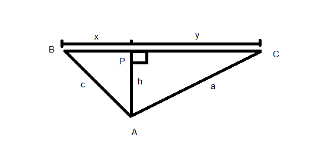
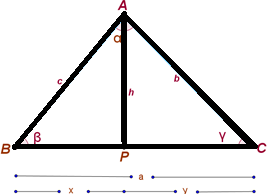
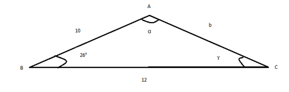
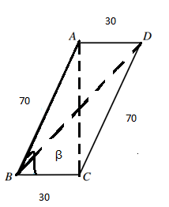

Tenemos el siguiente Triángulo:

Se tiene que
\[ a= x+y \]
de donde
\[ y = c - x\]
Aplicando el teorema de Pitágoras al triángulo $\bigtriangleup APBP$ de la izquierda
\[x^2+h^2=c^2 \ …(1)\]
Aplicando el teorema de Pitágoras al triángulo $\bigtriangleup APC$ de la derecha.
\[(a - x)^2+h^2=b^2 \ …(2)\]
Despejando $h^2$ de (1) y (2)
\[ h^2 = c^2 - x^2\ ...(3)\]
\[ h^2 =b^2 (a-x)^2\ ...(4)\]
Igualando los despejes en (3) y (4)
\[c2 - x2 = b2 - (a - x)2 \ …(5)\]
Desarrollando el binomio y simplificando
\[ c^2 - x^2=b^2 -a^2+2ax-x^2\]
\[ c^2=b^2 -a^2+2ax-x^2 + x^2\]
\[ c^2=b^2 -a^2+2ax \ ...(6)\]
En el triángulo $ \bigtriangleup APC$ de la derecha se tiene:

\[ \ Cos (\gamma)= \frac{{{{{y}}}}}{{{{b}}}} = \frac{{{{( a-x)}}}}{{{{b}}}}\]
Recuerda que $y = a-x$
Despejando tenemos que:
\[b\cdot \ Cos (\gamma)= a-x \] o \[ x= a- b\cdot \ Cos (\gamma)\]
Sustituyendo el valor de x en (6).
\[ c^2 =b^2 - a^2+2a(a-b\cdot\cos(\gamma))\]
\[ c^2 =b^2 - a^2+2a^2-2ab\cdot\cos(\gamma)\]
\[ c^2 =b^2 +a^2-2ab\cdot\cos(\gamma)\]
La expresión (7) es la ley de los cosenos.
Y con respecto al triángulo dado, las tres expresiones de la ley del cosenos son:
\[ c^2 =b^2 +a^2-2ab\cdot\cos(\gamma)\]
\[ a^2 =b^2 +c^2-2bc\cdot\cos(\alpha)\]
\[ b^2 =a^2 +c^2-2ac\cdot\cos(\beta)\]
Encuentra las partes restantes del siguiente triángulo.
Aplicando la ley de los cosenos al lado $b$.
\[ b^2 =a^2 +c^2-2ac\cdot\cos(\beta)\]
Determinar el lado $b$ y la medida de $a$ y $y$

con $a= 12, c= 10$ y $\beta =$ 26°
$b^2 = 12^2 + 10^2 - 2(12) (10)cos$(26°)
Haciendo operaciones.
$b^2= 144 + 100 - 2(12)(10)(0.898)$
$b^2 = 244 - 240(0.898) = 244 - 215.52 = 28.48$
Sacando raíz cuadrada en ambos miembros.
el valor de $b=5.33$
Aplicando la ley de los senos para encontrar el ángulo γ.
Se tiene: $c=10,a=12,b=5.33$
\[ c^2 =b^2 +a^2-2ab\cdot\cos(\gamma)\]
$10^2 = 5.33^2 + 12^2 - 2(12) (5.33)* cos(\gamma)$
$100 = 28.48 + 144 - 127.92 * cos(\gamma)$
$100= 172.48 - 127.92* cos(\gamma)$
$127.92 * cos(\gamma) + 100 = 172.48 ; 127.92 * cos(\gamma) = 172.48 - 100$
$127.92 * cos(\gamma) = 72.48 $ ; despejando $cos(\gamma)$ se tiene:
\[\ Cos (\gamma)= \frac{{{\text{{72.48}}}}}{{{\text{127.92}}}} = 0.566\]
Para encontrar γ realiza el siguiente procedimiento en la calculadora.
- Presiona la tecla Shift
- Luego presiona la tecla cos
- En la pantalla se despliega, $cos^{-1}$
- Escribe el número 0.566
- Cierra el paréntesis derecho y presiona la tecla =
- El resultado es 55.52823806°
Como la suma de los ángulos internos de todo triángulo es de 180º, el valor de$\alpha$, lo obtenemos de, $\alpha + \beta + \gamma = $ 180° con $\gamma=$ 55°31’ y $\beta=$ 26°.
Sustituyendo valores, $\alpha$ + (26º) + (55º ) = 180º, después de hacer las operaciones indicadas $\alpha=$ 79°
En la siguiente figura determinar

En el $∆BCA$, se tiene.
$a=30, c=70$ y $<B=$ 65°$
\[ b^2 =a^2 +c^2-2ac\cdot\cos(B)\]
Sustituyendo
$b^2 = (30)^2 + (70)^2 - 2 (30) (70) cos (65)$
Haciendo las operaciones indicadas.
$b^2 = (30)^2 + (70)^2 - 2 (30) (70) cos (65º) = 900 + 4900 - 4200 (0.422)$
$= 5800 - 1772.4 = 4027.6$, así que, $b^2 = 4027.6$
Sacando raíz cuadrada en ambos miembros de la igualdad.
$b=63$ centímetros aproximadamente.